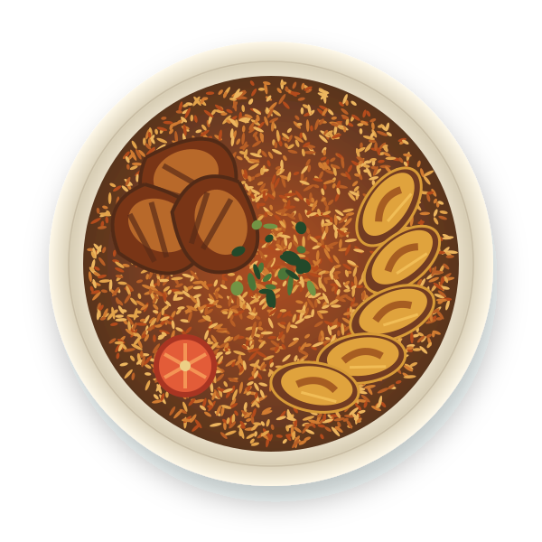

GOOD FOOD. NO GUESSWORK.
A little inspiration.
A whole lot of flavour.
Your ingredients. Our Nigerian favourites.
Let’s turn what’s in your kitchen into something delicious.
Made for our kitchens. Inspired by home.
THE TASTE OF HOME, REIMAGINEDJOLLOF & GOOD COMPANY

Small pantry.
Big possibilities.
Big possibilities.
16 Nigerian favourites⌁ Your pantry, your possibilities♡ Less waste. More flavour.
LET’S START WITH WHAT YOU HAVE
What’s in your kitchen?
Pick your ingredients. We’ll take care of the inspiration.
A little shortcut?
SOMETHING DELICIOUS IS WAITING
Meet your next meal.
Old favourites. New possibilities. Always a taste of home.
Filters cover the listed recipe ingredients, not serving suggestions or cross-contact. Stock is conservatively flagged for gluten. Always check product labels and your own allergy requirements.
A LITTLE PLANNING GOES A LONG WAY
From kitchen to market.
Plan a few meals. We’ll bring the missing ingredients together.
Your meal plan
Pick up at the market
Pantry selections mean you have an ingredient, not a measured amount. Check you have enough before cooking. Clear a pantry item to include it in this list.
Good food starts with what you have.
A little creativity. A few familiar ingredients. A reason to gather.